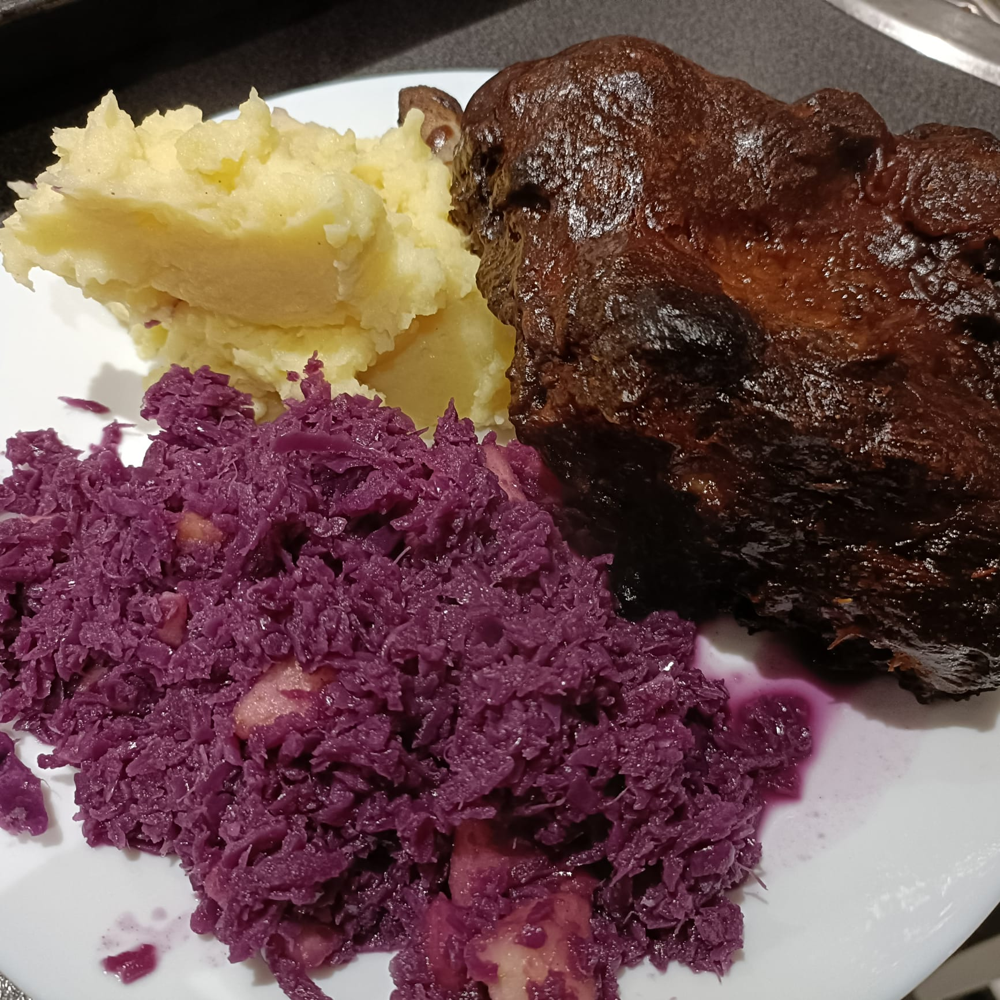

Oven-Baked Wild Boar Ribs with Braised Red Cabbage & Mashed Potatoes
ALGORITHM Oven-Baked Wild Boar Ribs with Braised Red Cabbage and Mashed Potatoes
------------------------------------------------------------
WILD BOAR RIBS
INGREDIENTS
1 rack wild boar ribs (or pork ribs)
DRY RUB
5 tbsp brown sugar
1 tbsp coarse sea salt
2 tsp mild paprika powder
2 tsp garlic powder
2 tsp onion powder
GLAZE
3 cloves garlic, finely chopped
1 onion, finely chopped
75 ml soy sauce
100 ml ketjap manis
5 tbsp honey
1 tbsp olive oil
PROCESS
Mix dry rub ingredients.
Remove membrane from ribs.
Rub ribs generously.
Marinate ≥ 1 hour (preferably overnight).
Preheat oven to 110–115°C.
Bake ribs 3 hours.
Wrap ribs tightly with splash of apple juice/cola/water.
Bake 2 more hours.
Prepare glaze:
Sauté garlic + onion in olive oil.
Add soy sauce + ketjap + honey.
Unwrap ribs.
Brush with glaze.
Bake 1 hour, brushing several times UNTIL sticky and caramelized.
------------------------------------------------------------
BRAISED RED CABBAGE
INGREDIENTS
1 small red cabbage (~800 g), sliced
50 g butter
1 onion, sliced
2 tbsp apple cider vinegar
30 g sugar
2 cinnamon sticks
3 cloves
1 bay leaf
100 ml apple juice
2 apples, diced
Salt + pepper
PROCESS
Melt butter.
Cook onion UNTIL soft.
Add cabbage + vinegar + sugar + spices.
Add apple juice.
Simmer 45–60 minutes.
Add apples last 10–15 minutes.
Remove spices before serving.
------------------------------------------------------------
MASHED POTATOES
INGREDIENTS
1.5–2 kg potatoes
Butter
Warm milk (or cooking water)
Salt
PROCESS
Cook potatoes UNTIL tender.
Drain.
Add butter + warm milk.
Mash UNTIL smooth.
Season with salt.
------------------------------------------------------------
SERVING SUGGESTION
Serve ribs with braised red cabbage and mashed potatoes.
Brush extra glaze over ribs.
OUTPUT
Tender glazed wild boar ribs with sweet braised red cabbage
and creamy mashed potatoes.
